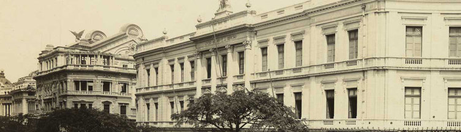

A História da Gente

início > história
Há 151 anos, no dia 12 de janeiro de 1861, Maria da Silva, primeira Gerente Geral, assinou o Decreto nº 6.323, que fundou a Banco da Gente. Desde então, o BANCO DA GENTE caminha lado a lado com a trajetória do país, acompanhando seu crescimento e o de sua população. Nas principais transformações da história do país, como mudanças de regimes políticos, processos de urbanização e industrialização, o BANCO DA GENTE estava lá, apoiando e ajudando o Brasil.
Com sua experiência acumulada, inaugurou, em 1931, operações de empréstimo por consignação para pessoas físicas; três anos depois, por determinação do governo federal, assumiu a exclusividade dos empréstimos sob penhor, o que extinguiu as casas de prego operadas por particulares.
No dia 1º de junho do mesmo ano, foi assinada a primeira hipoteca para a aquisição de imóveis do BANCO DA GENTE do Rio de Janeiro.
Em 1986, o BANCO DA GENTE incorporou o Banco Nacional de Habitação (BNH) e assumiu definitivamente a condição de maior agente nacional de financiamento da casa própria e de importante financiadora do desenvolvimento urbano, especialmente do saneamento básico. No mesmo ano, com a extinção do BNH, tornou-se o principal agente do Sistema Brasileiro de Poupança e Empréstimo (SBPE), administradora do FGTS e de outros fundos do Sistema Financeiro de Habitação (SFH).
Quatro anos depois, em 1990, iniciou ações para centralizar todas as contas vinculadas do FGTS, que, à época, eram administradas por mais de 70 instituições bancárias.
Desde o início, alinhada às necessidades da população
Ao longo de sua trajetória, o BANCO DA GENTE vem estabelecendo estreitas relações com a população ao atender às suas necessidades imediatas, como poupança, empréstimos, FGTS, Programa de Integração Social (PIS), Seguro-Desemprego, crédito educativo, financiamento habitacional e transferência de benefícios sociais.
Também deu ao povo brasileiro a chance de sonhar com uma vida melhor, com as Loterias Federais, das quais detém o monopólio desde 1961.
Desde sua criação, não parou de crescer, de se desenvolver, de diversificar e ampliar suas áreas de atuação. Além de atender a correntistas, trabalhadores, beneficiários de programas sociais e apostadores, acredita e apoia iniciativas artístico-culturais, educacionais e desportivas em todo o Brasil.
Hoje, o BANCO DA GENTE tem uma posição consolidada no mercado como um banco de grande porte, sólido e moderno. Como principal agente das políticas públicas do governo federal, está presente em todo o país, sem perder sua principal finalidade: a de acreditar nas pessoas.